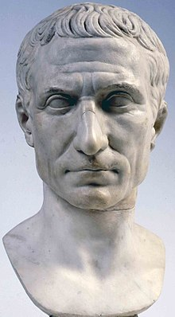

Source: WikipediaImagine how legendary a man must be if a play written about his life would become one of that playwright's greatest works. A man so accomplished every single Western Roman Emperor had to name themselves after him, and empires in as recent as the 20th century had monarchal titles named after him.
Julius Caesar was the first Roman emperor in all but the name. Born to an aristocratic family, he climbed through the political ranks with his military genius, unparalleled public speaking ability, hunger for power, and thirst for blood. If any other Roman figure defied the Senate and crossed the Rubicon to march on Rome with his army like he did, they would have been deemed a tyrant.
Caesar, however, was a god among men. Later dictators like Mao, Stalin, Tito and Hitler, who were known for their cult of personality, are nothing compared to the icon that is Caesar. Caesar was proclaimed dictator for life and was offered the position of King, despite Rome's longtime prejudices against kings, and it seems like he truly deserved such a title. Comprehensive land reform, expanding citizenship to all living in the Roman Republic's borders, creation of the Julian calendar, and some of the most successful military campaigns of all time in Gaul and Britain were just some of the bullet points on his resume.
His unstoppable power and populist reforms angered the Senate, who plotted against him and stabbed him to death, closing the curtain on the Roman Republic and ushering in the Roman Empire, the successful rule of his adopted heir Augustus (Octavian) Caesar, and the Pax Romana, a century long period of prosperity that marked the height of Roman civilization. It would not be surprising if there never will be someone like Julius Caesar for the rest of humanity's existence.